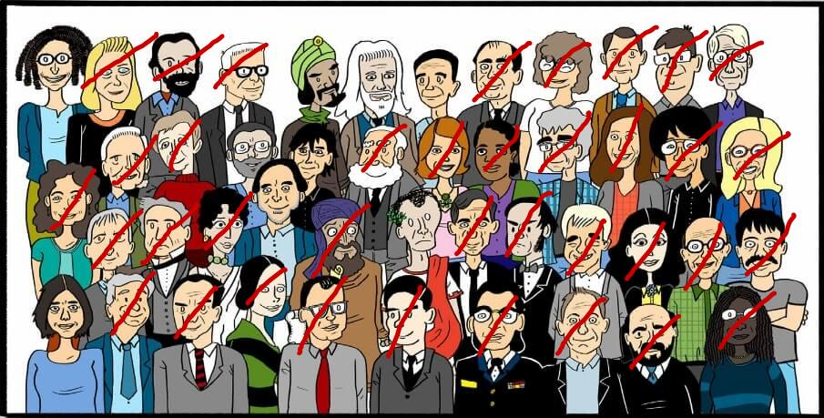

La famille Sécurité & Confidentialité
Description de la Famille:
La famille "Sécurité & Confidentialité" du jeu de la 7 familles met en avant des membres qui veillent à la protection et à la préservation des données sensibles. Chaque membre de cette famille contribue à assurer un environnement sûr et confidentiel pour les données et les communications, jouant un rôle essentiel dans la protection des utilisateurs et de leurs informations personnelles. Leur mission commune est de prévenir les intrusions, de détecter les menaces et de mettre en place des mécanismes de défense robustes pour garantir la confidentialité et la sécurité des utilisateurs dans le monde virtuel.
Sécurité & Confidentialité
Cette famille regroupe des personnages dotés de compétences spécifiques dans le domaine de la sécurité informatique et de la confidentialité des informations. Parmi les membres de cette famille, on trouve le "Cryptographe", spécialiste des codes et des cryptages, le "Garde de Données", chargé de surveiller les informations sensibles, et le "Protecteur de Réseaux", garant de la sécurité des communications en ligne.